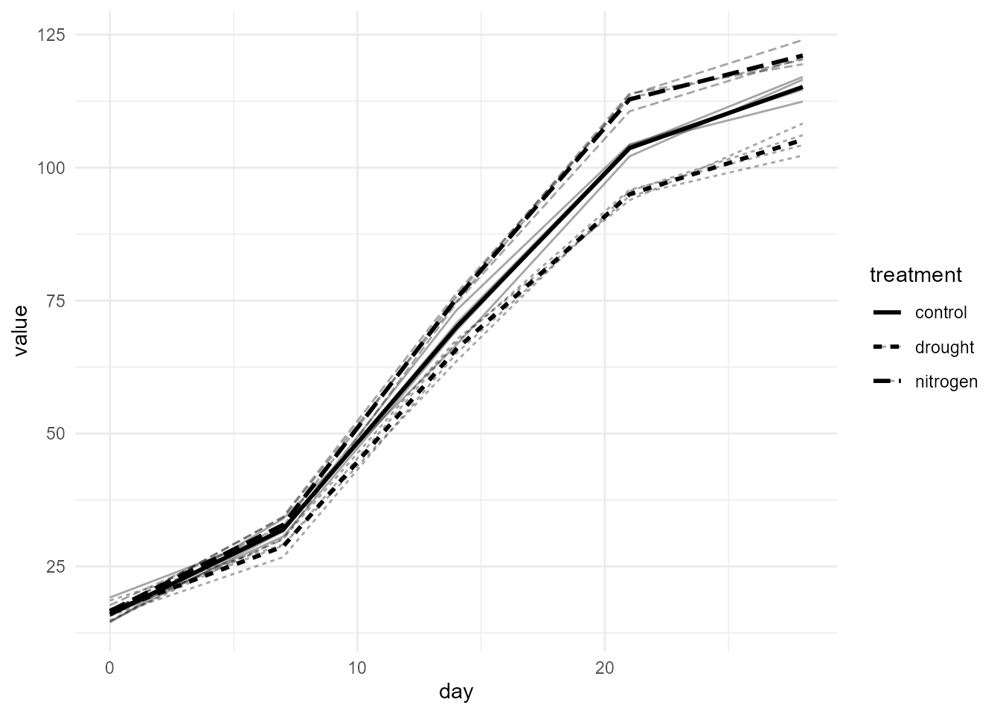

OmniPhenoR Longitudinal Phenotyping: From Repeated Images to Dynamic Traits
Source:vignettes/v23-longitudinal-phenotyping.Rmd
v23-longitudinal-phenotyping.RmdPurpose
Version 0.4.0 extends OmniPhenoR from a pipeline that produces phenotypes from individual images into a framework that preserves biological identity through time. This distinction is fundamental. Repeated images of the same plant are not independent experimental units, and a longitudinal workflow must preserve study, plot, plant, organ, acquisition, time, trait, source, and quality information before statistical modeling. High-throughput phenotyping increasingly depends on converting repeated sensor observations into interpretable biological trajectories rather than isolated measurements (Tardieu et al. 2017; Araus and Cairns 2014).

1. The canonical pheno_series
The 0.4.0 temporal grammar begins with a long-form table. One row is an observation of one trait on one biological unit at one time.
d <- pheno_data("growth_series")
s <- pheno_series(
d,
id = "plant_id",
time = "day",
trait = "trait",
value = "value",
group = c("treatment", "block", "environment")
)
s
#> <pheno_series>
#> rows: 120
#> subjects: 12
#> traits: 2
#> time range: 0 to 28The same object can retain calendar dates while using day after emergence as the analytical clock.
s_date <- pheno_series(
d,
id = "plant_id",
time = "date",
trait = "trait",
value = "value",
group = c("treatment", "block")
)
s_date
#> <pheno_series>
#> rows: 120
#> subjects: 12
#> traits: 2
#> time range: 2026-05-01 to 2026-05-29Interpretation. The id field identifies
the repeated biological subject. Treatment and block are attributes of
that subject, not substitutes for subject identity.
2. Validate before modeling
validation <- pheno_series_validate(s)
validation
#> # A tibble: 4 × 3
#> check pass detail
#> <chr> <lgl> <chr>
#> 1 duplicate subject-time-trait TRUE FALSE
#> 2 complete identity TRUE FALSE
#> 3 finite numeric values TRUE TRUE
#> 4 within-series order TRUE TRUE
stopifnot(all(validation$pass))The validator checks duplicate subject-time-trait records, missing identity, numerical values, and within-series ordering. A duplicated acquisition should not be silently averaged unless the scientific protocol explicitly defines that operation.
qc <- pheno_series_qc(s)
table(qc$quality_flag)
#>
#> OK
#> 120Quality flags are retained rather than deleting observations. This is especially important when a failed segmentation, missing acquisition, occlusion, or plant death have different biological meanings.
3. Time origin is part of the phenotype definition
A trajectory can be indexed by planting date, emergence, treatment application, inoculation, flowering, or thermal time. These clocks are not interchangeable.
s2 <- pheno_set_time_origin(
s,
origin = 14,
new_time = "days_after_treatment"
)
head(s2[c("plant_id", "day", "days_after_treatment")])
#> <pheno_series>
#> rows: 6Do not overwrite the original time column. Keeping both absolute and relative time makes the transformation auditable.
4. Align irregular or incomplete acquisitions
Plants may be photographed on slightly different schedules. Alignment should therefore be explicit.
small <- s[s$plant_id %in% c("P01", "P02") & s$trait == "leaf_area", ]
aligned <- pheno_time_align(
small,
grid = seq(0, 28, by = 2),
method = "linear"
)
aligned
#> <pheno_series>
#> rows: 30
#> subjects: 2
#> traits: 1
#> time range: 0 to 28A nearest-time alignment is more defensible when interpolation would create an artificial biological measurement.
nearest <- pheno_time_align(
small,
grid = c(0, 5, 12, 19, 26),
method = "nearest"
)
nearest
#> <pheno_series>
#> rows: 10
#> subjects: 2
#> traits: 1
#> time range: 0 to 26Use method = "exact" when observations should only be
compared if they occurred at the same recorded time.
5. Raw trajectories should remain visible
leaf <- subset(d, trait == "leaf_area")
pheno_plot_series(
leaf,
time = "day",
value = "value",
subject = "plant_id",
group = "treatment",
show_individual = TRUE,
summary = TRUE
)
A group mean alone can hide heterogeneity, failed plants, delayed development, and treatment-specific variance. Individual trajectories should be inspected before choosing a model.
6. Smoothing is a transformation, not ground truth
p1 <- subset(leaf, plant_id == "P01")
lo <- pheno_smooth(p1, "day", "value", method = "loess")
#> Warning in simpleLoess(y, x, w, span, degree = degree, parametric = parametric,
#> : span too small. fewer data values than degrees of freedom.
#> Warning in simpleLoess(y, x, w, span, degree = degree, parametric = parametric,
#> : pseudoinverse used at 0
#> Warning in simpleLoess(y, x, w, span, degree = degree, parametric = parametric,
#> : neighborhood radius 14
#> Warning in simpleLoess(y, x, w, span, degree = degree, parametric = parametric,
#> : reciprocal condition number 0
#> Warning in simpleLoess(y, x, w, span, degree = degree, parametric = parametric,
#> : There are other near singularities as well. 49
#> Warning in predLoess(object$y, object$x, newx = if (is.null(newdata)) object$x
#> else if (is.data.frame(newdata))
#> as.matrix(model.frame(delete.response(terms(object)), : span too small. fewer
#> data values than degrees of freedom.
#> Warning in predLoess(object$y, object$x, newx = if (is.null(newdata)) object$x
#> else if (is.data.frame(newdata))
#> as.matrix(model.frame(delete.response(terms(object)), : pseudoinverse used at 0
#> Warning in predLoess(object$y, object$x, newx = if (is.null(newdata)) object$x
#> else if (is.data.frame(newdata))
#> as.matrix(model.frame(delete.response(terms(object)), : neighborhood radius 14
#> Warning in predLoess(object$y, object$x, newx = if (is.null(newdata)) object$x
#> else if (is.data.frame(newdata))
#> as.matrix(model.frame(delete.response(terms(object)), : reciprocal condition
#> number 0
#> Warning in predLoess(object$y, object$x, newx = if (is.null(newdata)) object$x
#> else if (is.data.frame(newdata))
#> as.matrix(model.frame(delete.response(terms(object)), : There are other near
#> singularities as well. 49
sp <- pheno_smooth(p1, "day", "value", method = "spline")
head(lo)
#> # A tibble: 5 × 4
#> time raw smoothed method
#> <dbl> <dbl> <dbl> <chr>
#> 1 0 14.5 14.5 loess
#> 2 7 34.0 34.0 loess
#> 3 14 66.7 66.7 loess
#> 4 21 102. 102. loess
#> 5 28 117. 117. loess
head(sp)
#> # A tibble: 5 × 4
#> time raw smoothed method
#> <dbl> <dbl> <dbl> <chr>
#> 1 0 14.5 14.5 spline
#> 2 7 34.0 34.0 spline
#> 3 14 66.7 66.7 spline
#> 4 21 102. 102. spline
#> 5 28 117. 117. splineSmoothing can improve derivative estimation, but excessive smoothing can shift phenological transitions or attenuate stress responses. The method and parameters therefore belong in the provenance. The package also supports a transparent moving-average option for short exploratory series.
7. From series to dynamic traits
traits <- pheno_tidy(
d,
subject = "plant_id",
time = "day",
value = "value",
trait = "trait"
)
traits
#> # A tibble: 12 × 7
#> subject green_fraction_auc green_fraction_maximum green_fraction_max_slope
#> <chr> <dbl> <dbl> <dbl>
#> 1 P01 23.9 0.884 0.000394
#> 2 P02 24.0 0.895 0.00299
#> 3 P03 24.0 0.887 0.00150
#> 4 P04 24.3 0.903 0.00306
#> 5 P05 23.9 0.887 0.00179
#> 6 P06 24.1 0.894 0.00359
#> 7 P07 24.2 0.894 0.00201
#> 8 P08 23.9 0.887 0.00135
#> 9 P09 23.5 0.889 0.00151
#> 10 P10 23.6 0.893 0.000353
#> 11 P11 23.7 0.891 0.00291
#> 12 P12 23.7 0.893 0.0000690
#> # ℹ 3 more variables: leaf_area_auc <dbl>, leaf_area_maximum <dbl>,
#> # leaf_area_max_slope <dbl>This converts repeated measurements into one row per experimental subject with dynamic summaries such as AUC, maximum value, and maximum observed slope. These summaries can then be exported to mixed models, multivariate analysis, breeding pipelines, or other statistical packages.
8. Avoid pseudo-replication
Suppose 12 plants are imaged on five dates for two traits. The table has 120 rows, but it still contains only 12 plant-level repeated subjects. A standard analysis that treats all 120 rows as independent observations inflates the apparent sample size.
The repeated-measures layer introduced in 0.4.0 therefore always asks for a subject identifier. When the experimental unit is the plot rather than the plant, the subject should be the plot or an appropriate nested identity.
9. Missing observations require semantic interpretation
A missing value may represent:
- no image acquired;
- image acquired but failed QC;
- plant hidden by occlusion;
- segmentation failure;
- organ absent because of phenological stage;
- dead plant;
- intentional skipped acquisition.
Only the first four are measurement failures. The last two can be biological information. Store the cause whenever it is known.
10. Minimal integrated workflow
d <- pheno_data("growth_series")
s <- pheno_series(d, "plant_id", "day", "trait", "value",
group = c("treatment", "block", "environment"))
stopifnot(all(pheno_series_validate(s)$pass))
leaf <- s[s$trait == "leaf_area", ]
growth <- pheno_growth(
leaf,
time = "day",
value = "value",
model = "spline",
group = "plant_id"
)
dynamic <- pheno_growth_traits(growth)
dynamic
#> # A tibble: 12 × 11
#> series status error minimum maximum auc max_growth_rate time_max_growth
#> <chr> <chr> <chr> <dbl> <dbl> <dbl> <dbl> <dbl>
#> 1 P01 ok NA 14.5 117. 1883. 5.59 15.4
#> 2 P02 ok NA 15.7 112. 1882. 6.21 13.2
#> 3 P03 ok NA 14.6 115. 1919. 6.45 11.9
#> 4 P04 ok NA 19.2 117. 1919. 6.22 12.5
#> 5 P05 ok NA 15.9 121. 1985. 7.04 12.3
#> 6 P06 ok NA 16.5 124. 2056. 6.59 14
#> 7 P07 ok NA 16.4 120. 2052. 6.65 13.0
#> 8 P08 ok NA 17.7 120. 2042. 6.96 13.2
#> 9 P09 ok NA 18.6 106. 1754. 5.60 13.2
#> 10 P10 ok NA 14.9 108. 1772. 5.78 11.5
#> 11 P11 ok NA 15.7 102. 1719. 6.07 12.2
#> 12 P12 ok NA 17.0 104. 1768. 6.02 11.9
#> # ℹ 3 more variables: t25 <dbl>, t50 <dbl>, t75 <dbl>Reporting checklist
Report the biological subject, acquisition schedule, time origin, missingness meaning, alignment/interpolation method, smoothing method, units, image-derived trait definition, quality-control flags, and whether derived dynamic traits were estimated per subject before treatment-level inference.
Final perspective
The central principle of longitudinal phenotyping is simple: time adds observations, not independent biological replicates. OmniPhenoR 0.4.0 keeps identity, acquisition time, image-derived traits, temporal processing, and downstream inference connected in one auditable workflow.
Extended interpretation: identity before analysis
A repeated-image dataset can be perfectly tidy and still be scientifically wrong if the identifier represents an image file rather than the biological subject. Before fitting any trajectory, trace at least one row back to its study, environment, plot, plant or organ and acquisition. Then verify that repeated images from the same unit share the same subject identifier.
The same principle applies after object detection. If several leaves are summarized within a plant, decide whether the longitudinal unit is the leaf, the plant, or the plot. A leaf identifier that disappears because of occlusion should not silently be replaced by a newly detected leaf while pretending that one organ was followed continuously. When organ tracking is uncertain, aggregate to the plant level or mark tracking uncertainty explicitly.
A useful release check is to deliberately introduce one duplicate
subject-time-trait row and one missing subject identifier into a copy of
the teaching data. pheno_series_validate() should expose
both conditions. Such adversarial examples are more informative than
checking only well-formed data.